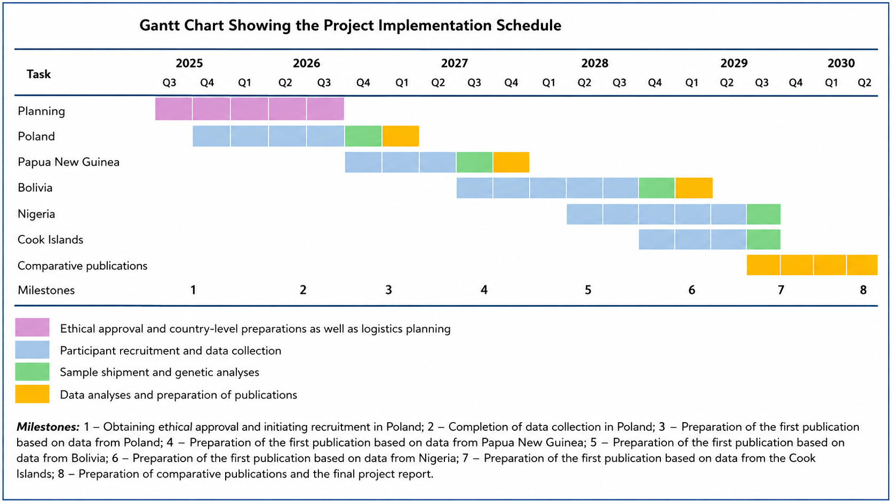

First half of 2026
Research Preparation
The team is preparing research procedures, materials for participants, and the organization of the upcoming stages of data collection.

An interdisciplinary research project
funded by the National Science Centre, Poland, under the MAESTRO-16 programme
The project investigates biological, social, and psychological mechanisms that may shape human attraction, relationship quality, physical attractiveness, fertility, and offspring health.
Have you ever wondered why, when looking for a potential romantic partner, you find only certain people attractive? It turns out that it may not be just about appearance, personality, or even shared interests – your immune system may also play a role in your choice! In particular, certain genes within the human leukocyte antigen (HLA) complex, which help regulate your immune system, may also influence whether you find someone attractive. Research suggests that people may benefit from choosing partners whose HLA genes differ from their own, potentially leading to stronger relationships, greater reproductive success, healthier children, and even better parental care.
This project will investigate whether genetic compatibility (or incompatibility) plays a role in how much love and happiness we experience in our relationships. We will also examine whether modern social practices, such as hormonal contraception and perfume use, interfere with this natural process of mate choice. We will address important questions:
Does having a genetically dissimilar partner lead to stronger and more satisfying relationships?
Does genetic diversity influence how attractive people are perceived to be, as well as their social status, income, and position in the mating market prior to marriage?
Does HLA compatibility between partners lead to higher fertility and healthier pregnancies? Are children of genetically compatible parents healthier, particularly in traditional societies where child mortality is higher?
How does the relationship between HLA compatibility and the broadly defined quality of life within romantic relationships differ between Western and traditional societies?
First, most research of this kind has focused on WEIRD (Western, Educated, Industrialized, Rich, and Democratic) societies. We are extending this research to traditional societies to address important questions that remain unresolved. Second, our project is highly interdisciplinary, bringing together psychology, anthropology, biology, and even public health. Finally, we examine both genetic differences between partners and their individual genetic diversity—an aspect that has not yet been fully explored but may be crucial for understanding quality of life in romantic relationships. The findings of our research may have important social implications. For example, if mate choice based on HLA compatibility is substantially more common in traditional than in Western societies, this could prompt us to reconsider how cultural practices influence our relationships and health. Although we are certainly not suggesting that people should start checking their DNA before going on a date, our findings may have important implications for areas such as relationship counselling, family planning, and even public health policy. After all, a little science in love can go a long way!
The study combines psychological, anthropological, and genetic approaches.
Assessment of participants’ psychological, social, and health characteristics.
We will take basic anthropometric measurements (height, weight, body composition, and handgrip strength) as well as standardized facial photographs used exclusively for scientific purposes.
We will collect a saliva sample for the analysis of human leukocyte antigen (HLA) genes.
The research will be conducted across several populations representing diverse cultural and social contexts. We will compare patterns of mate choice and relationship quality across different populations.
Six populations across several continents

The project is planned over five years and includes several stages: research preparation, participant recruitment, genetic analyses, data analysis, and publication of the results.

The study is open to adults who are currently in a long-term relationship.
If you and your partner would like to take part in a unique research project
that aims to better understand what influences the formation and stability of
romantic relationships, we warmly invite you to participate in our study.
In Poland, we are studying couples in several locations, including Wrocław and
the surrounding area, the Tricity area, Szczecin, and other locations.
Please contact us to find out whether we can meet you in your area!
We are looking for heterosexual couples who have children or are planning to have children.
Participation involves an individual meeting with a researcher, during which you will complete a short set of questionnaires and answer questions about, among other things, your romantic relationship, health, reproductive history, and basic sociodemographic information. We will also take basic anthropometric measurements (height, weight, and body composition), measure handgrip strength, and take standardized facial photographs used exclusively for scientific purposes. This part of the study takes approximately 45 minutes.
Participants who provide separate consent to take part in the genetic component of the project will be asked to provide a small saliva sample (approximately 2 ml). The samples will be used exclusively for the analysis of human leukocyte antigen (HLA) genes and sent to a genetic research laboratory in Scotland. All data and biological samples will be labelled with an individual study code and analysed exclusively for scientific purposes, in accordance with applicable data protection regulations.
Updates on the different stages of the project, fieldwork, publications, and events will be posted here soon.
The team is preparing research procedures, materials for participants, and the organization of the upcoming stages of data collection.
Updates on the progress of the project will be published in this section.
The project is not only about scientific research. An important part of our work is also communicating science and sharing our research findings with a wider audience.
Throughout the project, we will organize public lectures, talks, and science communication events. During these events, we will discuss the biological and psychological mechanisms of mate choice, the role of HLA genes, and the latest findings from our research.
Information about our first event will be published soon.
The project is carried out by an international team of researchers specializing in evolutionary psychology, biological anthropology, and genetics.

Institute of Psychology, University of Wrocław,
Faculty of Natural Sciences, University of Stirling, United Kingdom
Institute of Psychology, University of Wrocław
Jagiellonian University Medical College
Institute of Psychology, SWPS University
Faculty of Health Sciences and Sport, University of Stirling, United Kingdom
Charles University, Prague, Czech Republic
Institute of Psychology, University of Wrocław
Institute of Psychology, University of Wrocław
Institute of Psychology, University of Wrocław
Institute of Psychology, University of Wrocław
This section will feature scientific articles, conference presentations, and science communication materials presenting the results of the project.
For enquiries about the project, research collaboration, or information for participants, please contact our research team.
University of Wrocław
Institute of Psychology
1 Dawida Street, 50-527 Wrocław, Poland
E-mail: galasinska@gmail.com